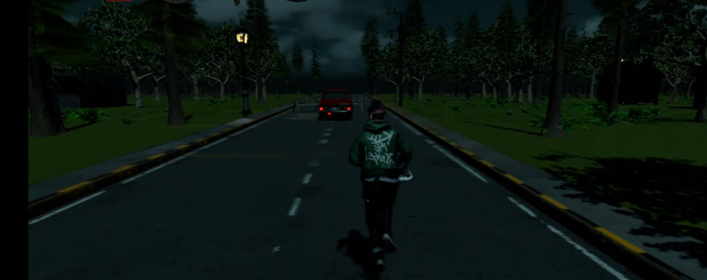
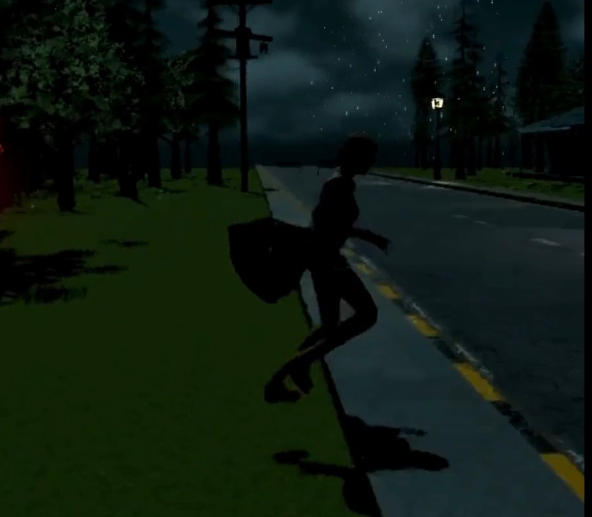
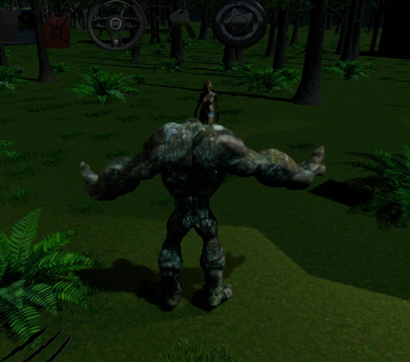
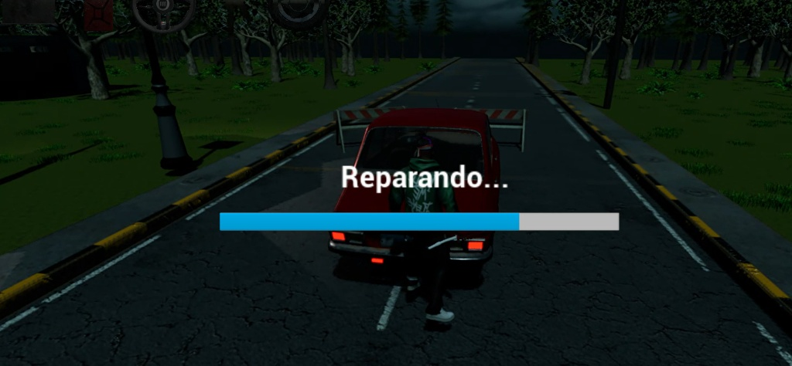
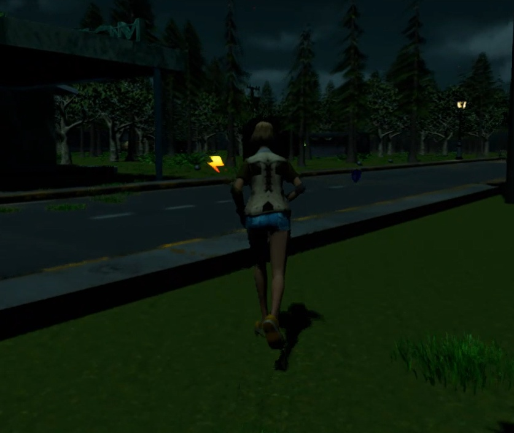
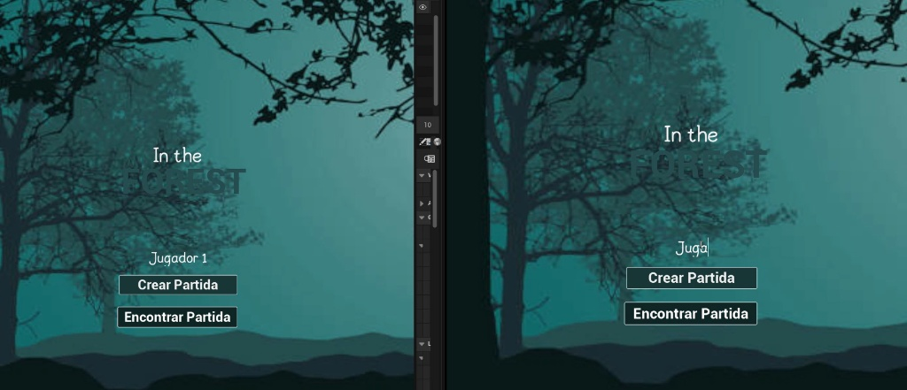

Un bosque oscuro y sin salida aparente. Un jugador controla al Monstruo mientras de 1 a 3 supervivientes intentan reunir las piezas de un automóvil para escapar con vida.


Atrapados en medio de la noche e iluminados únicamente por las tenues farolas de la carretera, los supervivientes deben moverse con sigilo entre la niebla, apoyarse en equipo y recorrer el bosque sin ser alcanzados.
Controlado por un jugador, esta imponente criatura acecha entre los árboles para cazar a los supervivientes antes de que logren encender el vehículo.
El Monstruo puede correr muy rápido para emboscar a sus presas, pero se cansa tras el esfuerzo, dando unos segundos clave para que los supervivientes logren escapar.


Para huir del bosque, los supervivientes deben encontrar las piezas ocultas del automóvil —bidón de gasolina, volante, llaves y neumático— y llevarlas al carro rojo en la carretera hasta completar la barra de reparación.
A lo largo del camino aparecen potenciadores luminosos que ayudan a los supervivientes en los momentos más peligrosos:
El rayo amarillo aumenta tu velocidad para alejarte rápidamente del Monstruo.
El escudo azul permite protegerte de los ataques enemigos mientras escapas.

Ingresa tu nombre de jugador en el menú principal, crea una sala o únete a tus amigos para descubrir quién logrará escapar del bosque.
